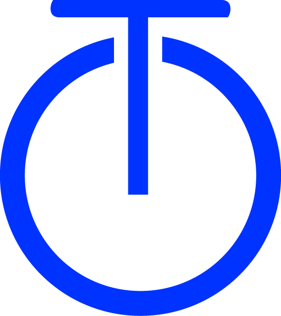

Tino YOLas tareas padre organizan el trabajo. El timer se inicia en tareas simples o subtareas.
Sin timer activo
Configurá cuánto tiempo querés trabajar en .
La estimación máxima permitida es de 999 h 59 min
Registra tiempo al proyecto completo o vinculalo a una tarea puntual.